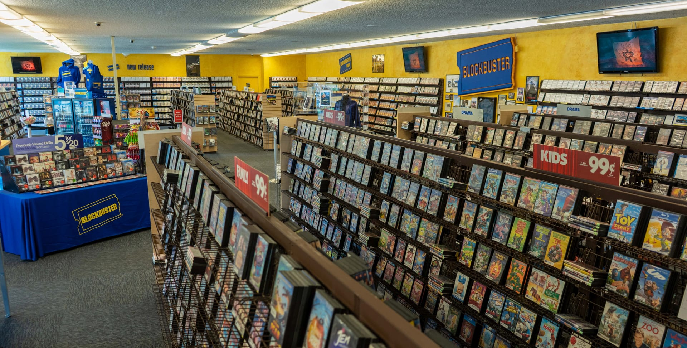

Movie Stores Are Dead :(
Morné VisagieMeri's Movie Ratings
| Title | Genre | Rating |
|---|---|---|
| When Harry Met Sally | Comedy/Romance | 8.79 |
| Pulp Fiction | Crime/Action | 8.1 |
| American Psycho | Horror/Comedy | 9.2 |
I vividly remember walking through movie rental stores. The Blockbuster in my area was just a five-minute drive down the road, and I can still hear my brother and sister bickering over who got to pick the movie. On good weeks, when my family was doing well, we would go to Blockbuster, Family Video, or the occasional Redbox vending machine and pick two movies to watch that week. The aisles were tall compared to me and filled with plastic containers featuring intricate cover art that would catch your eye and make you want to watch them. The carpets were usually dirty, and most of the time, it smelled like old pot from the worker behind the counter, but my younger self didn’t care. I wanted to run through the candy aisles and grab sugar-filled treats that would make me feel ill because I would eat them too fast.
Today, this is not the standard for kids who want to watch a show. In an article written by Morné Visagie, “The Death of Video Stores: A World of Magic Lost to Convenience,” the author mentions the magical feeling of being young and picking out your movie in person. read more about it here.